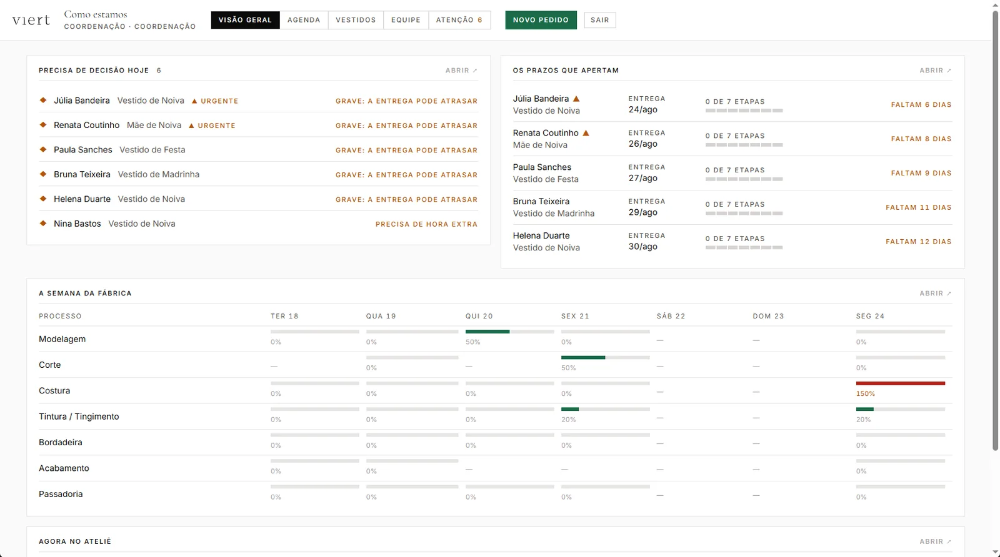
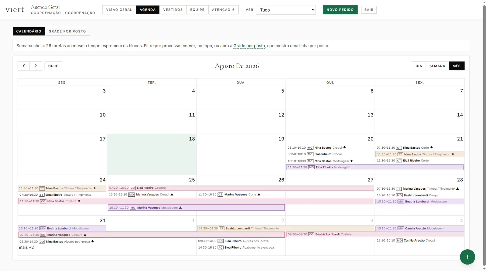

agenda-viert projects/agenda-viert
projects/agenda-viertRCPSP — Resource-Constrained Project Scheduling Problem


1 / 2
Problema:
- A produção da empresa Viert (ateliê de alta-costura) era coordenada manualmente, sem visibilidade centralizada sobre prazos, carga de trabalho e risco de atraso. Etapas como modelagem, corte, costura e acabamento dependiam de controles individuais não integrados, dificultando garantir que cada peça ficasse pronta a tempo das provas com as clientes.
Solução:
- Em vez de programar linha a linha, atuei como engenheiro de prompt e arquiteto do sistema, usando o Claude Code para implementar a solução de ponta a ponta, back-end e front-end, a partir dos requisitos reais do ateliê.
- O motor de scheduling resolve o problema central: prioriza pedidos pelo prazo da prova (não pela ordem de chegada), respeita a sequência fixa de etapas (modelagem, corte, costura, acabamento), verifica a disponibilidade real de cada profissional antes de alocar tarefas, e replaneja automaticamente a cada novo evento (pedido, atraso, ausência ou remarcação) sem exigir ajuste manual.
- O desenvolvimento seguiu um ciclo iterativo com o Claude Code: especificar, gerar e revisar código, testar, depurar, evoluir, repetido a cada ajuste real solicitado pelo ateliê. O sistema entrou em uso pela equipe da Viert já na primeira versão, entregue em 3 semanas, substituindo o controle manual por um painel sempre atualizado, validado por usuários não técnicos no dia a dia de produção.
Dificuldades:
- O modelo inicial tratava cada profissional como um recurso independente. Isso quebrou quando a planilha real revelou o Audaces, uma mesa de modelagem única operada por duas pessoas em turnos diferentes: modelados como recursos separados, nada impedia o motor de agendar os dois ao mesmo tempo na mesma máquina. A causa era conceitual, o sistema precisava representar o posto de trabalho como o recurso escasso, não a pessoa. A correção introduziu um modelo em três níveis (processo, posto, pessoa) e, como efeito colateral, eliminou um número de capacidade fixo digitado manualmente: a capacidade da equipe passou a ser calculada a partir de quem ocupa cada posto.
- Claude Code
- Python
- Google OR-Tools CP-SAT
- gRPC / Protocol Buffers
- TypeScript
- PostgreSQL
- React
- NestJS
- Tailwind